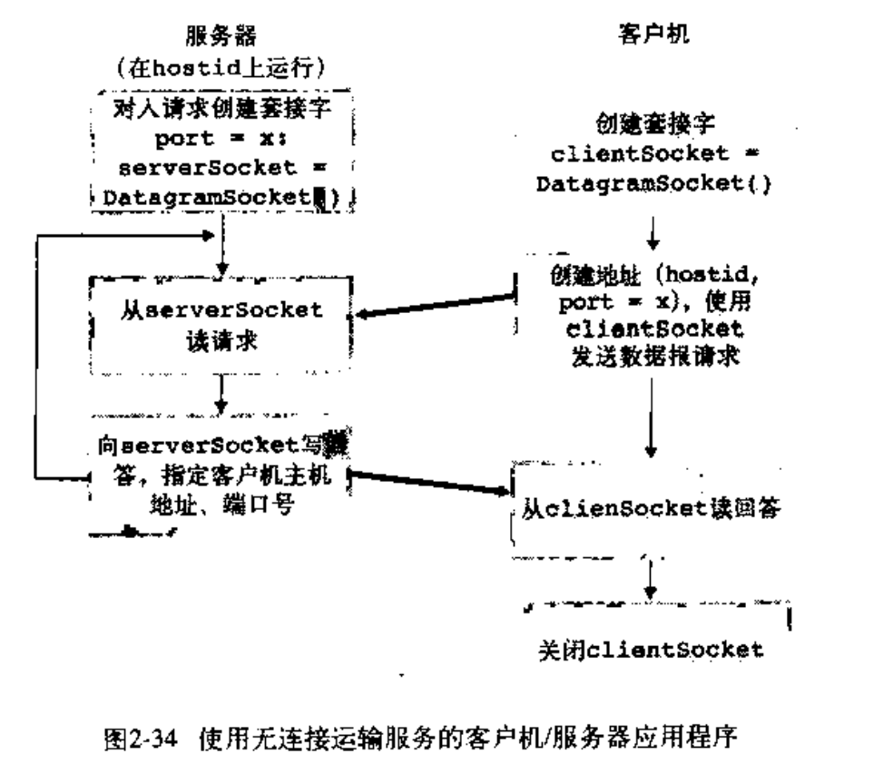
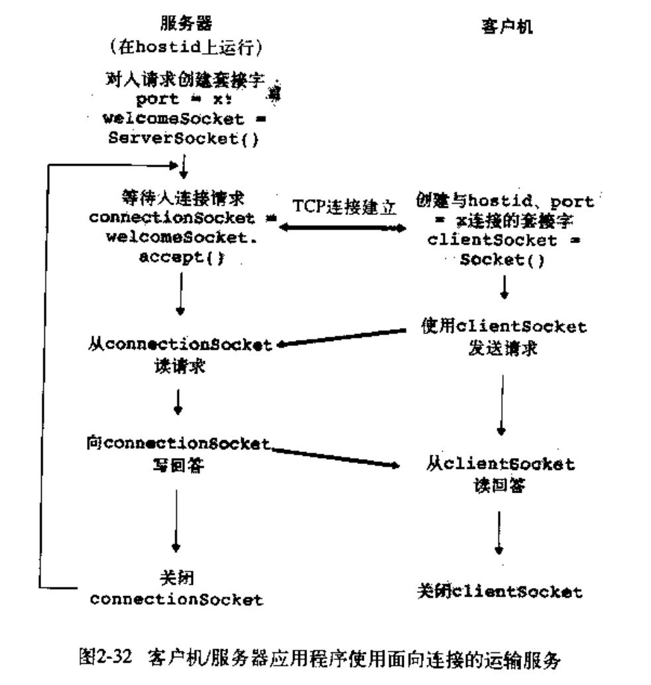

计算机网络（四）应用层（网络编程）
目录
第二章 应用层（网络编程）
UDP编程

UdpClient
from socket import *
serverName = "hostname"
severPort = 12000
clientSocket = socket(AF_INET,SOCK_DGRAM) # ipv4,udp
message = "Hello World"
clientSocket.sendto(message.encode(),(serverName,severPort))
modifiedMessage,serverAddress = clientSocket.recvfrom(2048)
print(modifiedMessage.decode)
clientSocket.close()Udpserver
from socket import *
serverPort = 12000
serverSocket = socket(AF_INET, SOCK_DGRAM) # ipv4,udp
serverSocket.bind(('', serverPort))
print("The server is ready to receive")
while True:
message, clientAddress = serverSocket.recvfrom(2048)
modifiedMssage = message.decode().upper()
serverSocket.sendto(modifiedMssage.encode(), clientAddress)TCP编程

TcpClient
from socket import *
serverName = "servername"
serverPort = 12000
clientSocket = socket(AF_INET,SOCK_STREAM) #ipv4,tcp
clientSocket.connect((serverName,serverPort))
sentence = "Hello World"
clientSocket.send(sentence.encode()) # tcp three-way handshake to welcomesocket
modifiedSentence = clientSocket.recv(1024)
clientSocket.close()TcpServer
from socket import *
serverPort = 12000
welcomeSocket = socket(AF_INET,SOCK_STREAM) # create for client to handshake
welcomeSocket.bind(('',serverPort))
welcomeSocket.listen(1) # accept one connection
print("The server is ready to receive")
while True:
connectionSocket,addr = welcomeSocket.accept() # create socket to connect to client
sentence = connectionSocket.recv(1024).decode()
modifiedMssage = sentence.decode().upper()
connectionSocket.send(modifiedMssage.encode())
connectionSocket.close()区别
TCP需要在传输前建立连接，传输后关闭连接